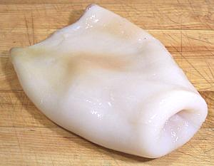

SAFARI
Users
The 2-1/4 pound squid shown in the photographs below is a bit above average for squid marketed as "Jumbo Squid" in Los Angeles. A squid like this yields about 1-1/2 pounds of edible body and tentacles with flesh 1/4 inch thick in the main body section. The body section, not counting the head, was 12-1/2 inches long. If the tentacles were stretched full length it would be about 29 inches tip to tip. This is a very fine all-purpose squid.
Real "Jumbo Squid" run 10 to 100 pounds and are used to make commercial "calamari steaks". On the West Coast large Humbolt Squid are found from San Diego, California to Peru, but due to climate change and oceanic disturbances have recently been seen as far north as Alaska.
Cleaning
All you really need for large squid is a cutting board, a sharp kitchen
knife and a round pointed butter knife. I also find a pair of long nose
pliers useful.
We start out with a whole fresh squid weighing about 2 pounds. Squid this size can be had cheaply in Los Angeles from Philippine and some other Asian markets.
Yield:
Fresh squid is generally sold whole as caught, so you'll have to clean and prepare it yourself. A 2-1/4 pound whole squid yielded 1.44 pounds of cleaned body and tentacles (64%). This squid was purchased for 2007 US $1.79 /pound, so the edible part came to $2.80 / pound. Just the body was 14.5 ounces (40%). Most recipes for fresh squid call for the weight of uncleaned squid, but check.
First cut off the tentacles just in front of the eyes. This will keep
them all together with the beak in the center. Push the beak and the lump
of stuff behind it out through the cut side, trim it off and discard. That's
the beak to the right of the tentacles.
Next pull off the head and it will bring most of the innards with it. This stuff is held in better than with small squid so use your thumb under the top edge of the body to help break it free.
Once that's pulled, just go in with your fingers and pull out anything you can reach, in particular the transparent "pen" (that's it resting on the near-side fin). The pen will most often be broken on these large squid so pull out all the pieces you can get, pulling straight forward.
Note: some recipes call for squid ink, so if you're cooking
one of those locate the ink sack in the pile of innards (it's black)
and remove it. In my experience the squid sold around here don't often
have a useful amount of ink. In Italy and Spain they sell squid ink in
stores, but in North America you can order small packets of ink on-line
from emporiums selling Spanish food items.
Now remove the skin. Unfortunately it is too tough to just rub off as
with small squid, and equally unfortunately it is often too weak to
strip off in large pieces. Best is if you can get your fingers under it
and work it away from the body. In any case it'll be a little tedious
but at least you're getting a lot of squid here.
A round pointed butter knife is very helpful for getting under the skin,
particularly in the more difficult fin area. You can also use it to
scrape off some of the harder to peel areas.

Now turn your squid inside out. It's a bit tricky to get it started due
to slipperiness but then it goes easy. Peel out any remaining innards and
membranes and otherwise clean it thoroughly. There might be a little of
the "pen" still in the tail end and a pair of long nose pliers can be
helpful in pulling it out.
If your squid is large like the 2-1/4 pounder in the photos, there may be hard rings around some of the sucker disks. You'll want to scrape these rings off.
Now you're done. All nice and clean, though not the blazing perfect white of commercial calamari, because they use bleach. You can stuff the squid or cut it up however your recipe requires.
Note:
Do not cook the tentacles with the bodies, the skin color bleeds and will stain the white bodies an unappetizing color. You can cook them in the same water after the bodies have been removed.What I usually do with the tentacles is cut between each one into
the beak hole (so there's no waste), stretch them out in the freezer
compartment to freeze individually (cut the two long ones in half to
match the rest) and bag them. Then I'll pull tentacles as needed, thaw,
cut into sections and add to soups and salads (cook first for salads).
Cutting
A large squid doesn't curl tightly like the
Small Squid but it does have significant
curl, again from front to rear and inside out. If you score the flesh
for a decorative pattern score the inside surface. The photo shows cuts
from a 10 inch squid tube, cut in half lengthwise. The top shows some
narrow cross cuts and how they cook below. The left shows a wide cross
cut scored, and how it will cook. In both cases, the curl is almost
entirely from front to rear.
Cooking
If it's really, really fresh, you don't even have to cook it. Squid is one of my favorite sushi items.
Squid should be cooked for a very short time at high temperature or simmered quite a long time. In between it has all the edibility of rubber bands. Long cooked, the squid has a somewhat different flavor and the texture is firm but not crunchy as it is with very short cooking.
Cooked for less than 30 seconds, yield will be near 100%, but much longer and the squid will shrink alarmingly. Your big pile of raw squid will become a much smaller pile, and it's weight will be about 60% of raw. Most of the shrinkage happens in the first couple of minutes. Recipes must be designed to take this into account.
If you are wet cooking your squid, cook the tentacles separately, either in different water or after all the bodies have been cooked and removed. The tentacles have skin on them which will discolor the bodies if cooked with them.
If short wet cooking, you should have the water at a rolling boil in a pot filled nearly to the brim. Put some of the squid (not too much so the water stays hot) in a wire strainer. Lower the strainer into the boiling water for the recommended time, then pull it and immediately refresh the squid under cold running water. I've found large squid much more tolerant than small squid and cooking time can be up to a minute before they toughen. Actually, 15 seconds is enough for most (6 to 9 inches), and up to 30 seconds for larger squid. Keeping to these times, your yield will be near 100% of uncooked weight, and the squid will still be a little crunchy, not rubbery.
If you are going the long simmering route, check your squid often for taste and texture. You want to pull it as soon as it becomes tender enough but still has some bite. Overcooked squid loses both flavor and texture. The time will be about 45 minutes so start sampling when you approach that time. Here also large squid is a bit more tolerant than small squid.
When frying, squid may be lightly battered or not battered at all. For unbattered squid get your oil plenty hot and stir fry for about 30 seconds. For battered squid deep fry a small amount at a time in very hot oil (375°F/190°C) and for the minimum time needed to color the batter.
Calamari steaks should be grilled over hot coals for 1 to 1-1/2
minutes per side depending on thickness.